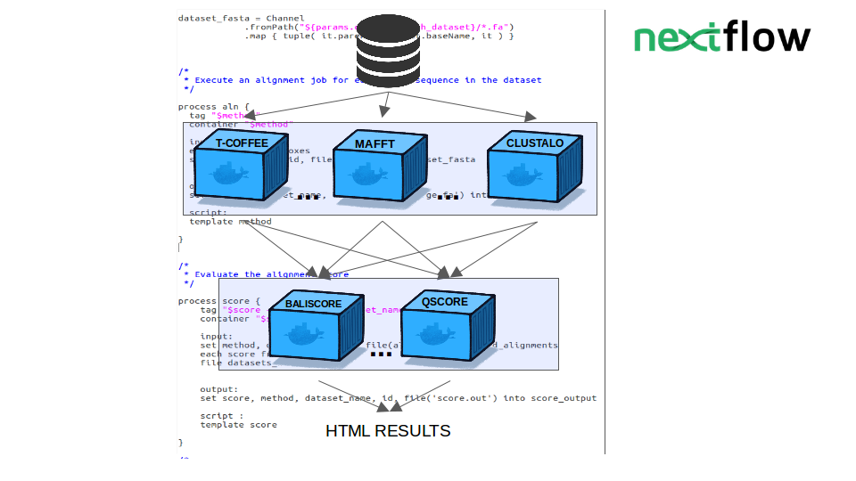
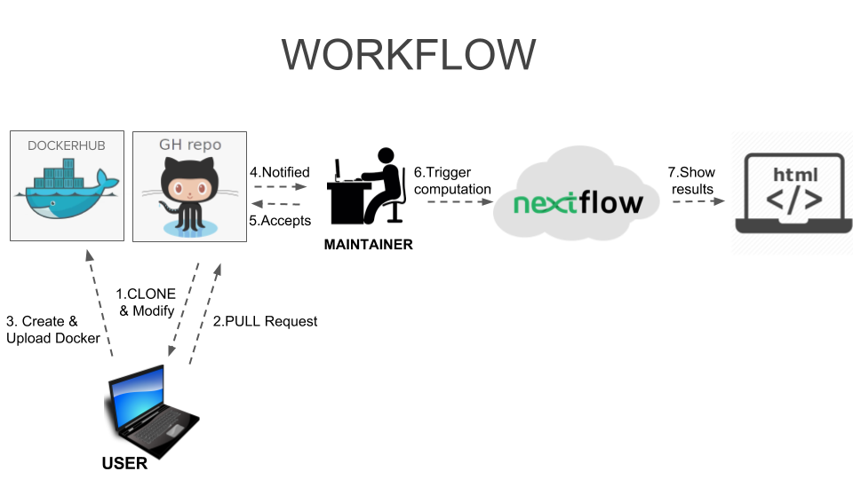

Introduction
Bengen is a Containerization-based Multiple Sequence Aligners prototype.
It allows to test each selcted MSA in the project on each selected Dataset using each selected scoring function.
Bengen provides an elegant structure for a benchmarking workflow. Reproducibility is allowed thanks to Docker containers usage. Moreover it is extremely easy for a user to integrate new MSAs or Scoring functions and expand the project.
How does it work?
Nextflow is the skeleton of Bengen and defines the Benchmarking workflow.
Aligner tools are stored as Docker images in the Docker hub. A unique ID is assigned to each image. This guarantees the containers immutability and the full replicability of the benchmark over time.
Docker provides a container runtime for local and cloud environments. Singularity performs the same role in the context of HPC and supercomputers (eg. Marenostrum).
GitHub stores and tracks code changes in consistent manner. It also provides a friendly and well-known user interface that would enable third parties to contribute their own tools with ease.

GETTING STARTED
Dependencies
In order to run bengen on your machine Docker and Nextlfow need to be installed.
Setup
You first need to clone the Bengen repository
git clone https://github.com/cbcrg/bengen
Then move in the bengen directory and use make to create all the needed images
cd bengen
make
Now you are ready to use Bengen!
CONFIGURATION
The overall benchmark is driven by a configuration file that allows the definition of different components
- params.dataset : Defines which dataset to use. Right now only the datasets provided in the benchmark_dataset directory are allowed. If you want to use them all you can use : params.dataset="*".
- params.renderer : Choose which renderer to use among the ones provided (csv, html, json )
- params.out : choose how the outputfile should be named
Example of configuration file content :
docker.enabled = true
params.dataset= "balibase"
params.renderer="csv"
params.out = ("output"+".${params.renderer}")
Important Inside of the bengen directory you can find the aligners.txt file and the scores.txt file. They define which aligner to use and which score function to use. You can modify them by adding/removing lines with the name of the aligners/scores you want to run( bengen/NameOfAlignerOrScore ).
Example of aligners.txt:
bengen/mafft
bengen/tcoffee
bengen/clustalo
Example of scores.txt:
bengen/qscore
bengen/baliscore
! You can see which aligners/scores are already integrated in the project by looking respectively in the boxes or boxes_score directories. You can find these in the bengen directory.
RUNNING BENGEN LOCALLY
In order to run bengen on your machine after having followed the steps under the "Getting started" section and modified the configuration file you can trigger the computation locally using the following command.
nextflow run bengen/main.nf
!Tip You can use the -resume command to cache what was already computed. This could happen if you run bengen multiple times.
nextflow run bengen/main.nf -resume
MODIFY BENGEN
Add a Multiple Sequence Aligner
You can easily integrate your new MSA in Bengen by using a script that automatically does the work for you.
In the bengen directory that you cloned you can find the add-aligner.sh script.
ARGUMENTS:
- -n|--name =Name of your MSA compulsory
- -d|--dockerfile= Complete Path to your Dockerfile compulsory
- -t|--template =Complete Path to your template file compulsory
- --add No argument. If called automatically adds the MSA to the aligners.txt file optional
- --make No argument. If used, calls the make command creating the image for the new MSA optional
Example :
bash add-aligner.sh --name=MSA-NAME -d=/complete/path/to/your/Dockerfile -t=/complete/path/to/your/templatefile --add --make
CONTRIBUTE TO THE PROJECT
If you wish to contribute to the project you can integrate your new MSA in the public project.
You need to follow these steps :
- Clone the repository and modify it by adding your new MSa
- Do a pull request to merge the project
- Upload the docker images on dockerhub
Afterwards the maintainer of the project will recieve a notification and accept it if relevant to the project. Then the maintainer triggers the computation and the new results are shown on a public HTML page.

Final Notes
The project is still under construction.